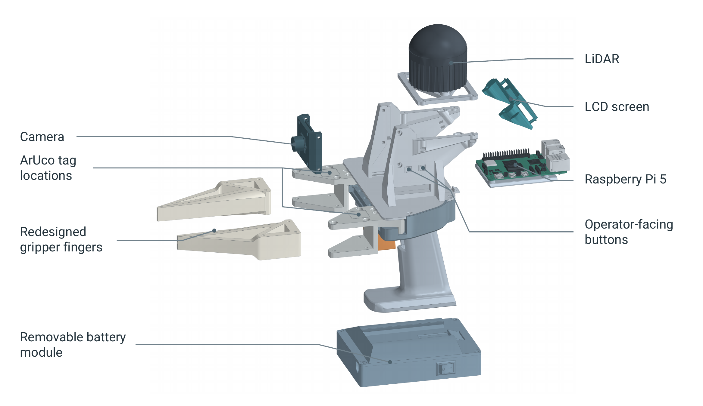

HARDWARE REPRODUCTION GUIDE
UMI-Live Hardware
Build the UMI-Live hardware from parts to a working unit. Follow the steps below for sourcing, 3D printing, assembly, wiring, and setup.
Start the build
STEP 01
Source the parts
The hardware guide builds one handheld UMI-Live unit. For a bimanual setup, plan for two units. Use the Off the Shelf tab below to source the electronics, power components, wiring, mechanical parts, fasteners, and consumables.
Follow the supplier links and purchase notes in the sheet. Check pack sizes and optional items before ordering: fractions of purchased packs describe material used, not the number of packs to buy.
Parts & sourcing Off the Shelf · spreadsheet
STEP 02
Print the UMI-Live components
- Download the UMI-Live STL files for printing. Use the STEP assembly when you need to inspect the CAD or adapt a part.
- Read the default settings at the top of the 3D Printed tab, then apply each part's material, support, brim, and slicer overrides. Use the listed quantities for your build.
- Print the components and remove and clean all support material before assembly. The assembly guide's illustrated parts list helps identify each printed part.
Print settings & quantities 3D Printed · spreadsheet
STEP 03
Assemble, wire, and inspect
Follow the illustrated guide below in order. It covers the body, trigger and gears; fingers and ArUco tags; body top and Raspberry Pi; camera, LCD and LiDAR; battery pack; and final connection and inspection.
Have M2/M3 drivers, scissors, flush cutters, a multimeter, and a wire stripper ready. Keep carriages on the rail, and keep the battery disconnected while assembling or changing wiring.
Use the guide's LCD/button pin map, battery circuit diagram, power-output checks, and final checklist as you work. The printable tag sheet needed for the fingers is directly below the guide.
Assembly guide v5 · 27 pages · PDF
Print and fit the ArUco tags
Print the original tag PDF at 100% / actual size, with Fit and Shrink disabled. Verify its 50 mm scale check before cutting, preserve the specified white margins, and follow the assembly guide for tag placement and IDs.
Printable ArUco tags IDs 0–3 · US Letter PDF
STEP 04
Configure, calibrate, and test
Complete the hardware guide's final inspection and power checks, then continue with the software setup instructions. These cover client and server installation, camera and gripper calibration, service verification, and recording.
ROBOT-SIDE HARDWARE
Build the YAM gripper and camera mount
For an I2RT YAM setup, print the custom robot-side gripper parts and camera mount. The YAM folder supplies the mount and finger holders; the finger backbones and pads come from the shared UMI-Live files.
The parts sheet lists the following for one custom YAM gripper:
- 1 camera mount:
SVPRO_YAM_Mount_v4, from the YAM STL folder. - 1 left finger holder:
UMI_Flow_YAM-Finger_Holder_Left_v12, from the YAM STL folder. - 1 right finger holder:
UMI_Flow_YAM-Finger_Holder_Right_v12, from the YAM STL folder. - 2 finger backbones:
finger_backbone, from the UMI-Live STL folder. - 2 finger pads:
finger_pad, from the UMI-Live STL folder.
The embedded print settings below show the I2RT YAM Parts section of the same 3D Printed sheet. Use its materials, supports, and per-part slicer overrides. Check the YAM quantities and filament totals separately from the handheld build, and scale the quantities for the number of grippers you are making.
The STEP files provide the CAD assemblies for reference. The current draft folder does not yet include a separate YAM assembly guide.
YAM print settings & quantities 3D Printed · I2RT YAM Parts
BEFORE YOU BUILD
Versions & build quantities
Preliminary sources checked on October 20, 2026: assembly guide v5 and UMI-Live STEP v4.26. These are source filenames, not a verified compatibility release. Files and instructions may change as the build is refined.
The guide lists parts for one handheld unit; a bimanual setup uses two. Check each spreadsheet section's scope: YAM accessories, filament estimates, and fractions of purchased packs use different quantity conventions.